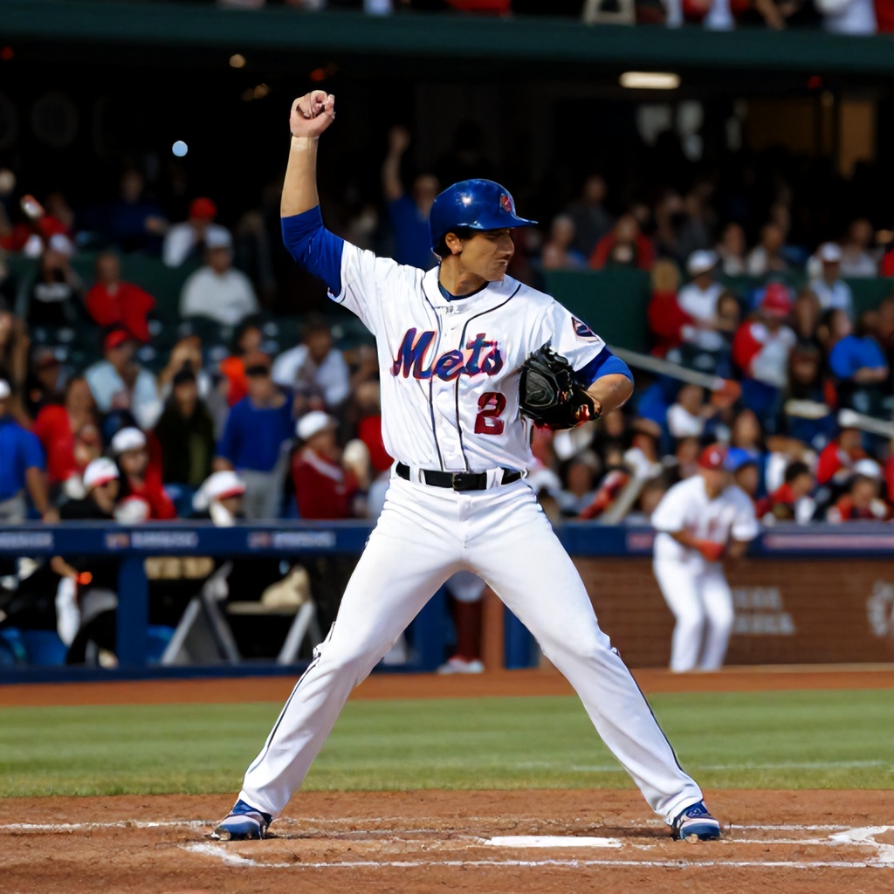

The New York Mets delivered a stunning upset victory over the St. Louis Cardinals on Wednesday night, capturing a crucial win in a game that defied pregame expectations. With the Mets favored at +100 and the Cardinals at +175, the betting market had the Cardinals as the slight favorites. However, the Mets' 5-4 victory proved that even underdogs can rise when their timing is right.
A Game of Inches
The game was a back-and-forth affair that saw both teams trade blows throughout the evening. The Mets took an early lead with a pair of runs in the second inning, but the Cardinals responded with a three-run rally in the third. Despite being down by two runs in the sixth, the Mets managed to tie the game in the seventh with a solo home run by Francisco Rodriguez. In the bottom of the ninth, with the score tied at 4-4, the Mets scored a walk-off single from Carlos Martinez to secure a dramatic 5-4 win.
Betting Market Reaction
The betting lines were conservative, with the Mets listed as a modest favorite at +100. The Cardinals were offered at +175, indicating that the bookmakers gave them a slight edge. However, the outcome suggests that the odds didn’t fully capture the momentum and resilience of the Mets. The game’s closing odds were close to the opening lines, meaning the betting market wasn't expecting such a reversal of fortune.
What This Means for the Rest of the Season
This victory not only boosts the Mets’ confidence but also puts pressure on the Cardinals, who now face questions about their ability to perform under pressure. The game also highlights the unpredictable nature of baseball, where a single swing can change everything. As we move forward into the weekend slate, teams like the Mets and Cardinals will look to maintain their momentum, while others will seek to capitalize on any weaknesses exposed in games like this one.
Looking Ahead
The betting market will be closely watching how these teams respond to their recent performances. The Mets’ win sets the stage for an intriguing matchup against the Atlanta Braves on Friday, where they’ll be tested again by a strong opponent. Meanwhile, the Cardinals will hope to bounce back and regain their footing in the standings. With several high-profile matchups scheduled, including games between the Yankees and Red Sox, and the Dodgers and Pirates, fans can expect more thrilling moments in the days ahead.